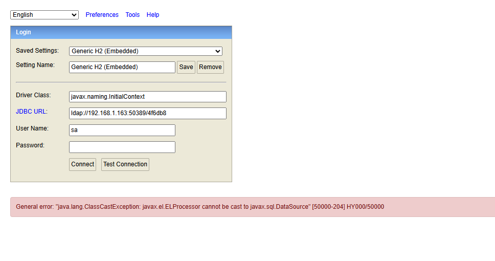

H2 Database Web 控制台未授权JNDI注入RCE漏洞（CVE-2021-42392）¶
H2 Database是一个快速、开源的基于Java的关系型数据库管理系统（RDBMS），可用于嵌入式（集成在Java应用中）和客户端-服务器模式。
当Spring Boot集成H2 Database时，如果设置如下选项，将会启用Web管理页面：
spring.h2.console.enabled=true
spring.h2.console.settings.web-allow-others=true
1.4.206之前版本的H2 Database管理页面支持通过JNDI加载JDBC驱动，攻击者可以利用JNDI注入实现远程代码执行。
参考链接：
- https://jfrog.com/blog/the-jndi-strikes-back-unauthenticated-rce-in-h2-database-console/
- https://mp.weixin.qq.com/s?__biz=MzI2NTM1MjQ3OA==&mid=2247483658&idx=1&sn=584710da0fbe56c1246755147bcec48e
- https://github.com/h2database/h2database/commit/b24aa46f48904ce64443f8f4353d70a2eed09037
- https://github.com/h2database/h2database/security/advisories/GHSA-h376-j262-vhq6
环境搭建¶
执行如下命令启动一个集成了H2 Database 2.0.204版本的Spring Boot：
docker compose up -d
容器启动后，Spring Boot服务监听在http://your-ip:8080，H2管理页面默认地址为http://your-ip:8080/h2-console/。
漏洞复现¶
在复现本漏洞前，可以先确认CVE-2018-10054中的payload已无法利用，因为1.4.197之后内存数据库被禁用：

1.4.197之后的H2控制台新增了-ifNotExists选项，默认禁用远程数据库创建。因此，攻击者无法通过未知数据库文件（如内存数据库）进入H2控制台。
但H2控制台依然支持JNDI注入，可用于执行任意代码。
我们可以直接使用Java-Chains来利用该漏洞。首先，使用JNDI/JNDIResourceRefPayload模块生成恶意JNDI URL（记得填写你想执行的命令）：

然后，访问H2 Web控制台登录页，将Driver class填写为javax.naming.InitialContext，JDBC URL填写为Java-Chains生成的JNDI URL：

如图所示，命令已被成功执行：